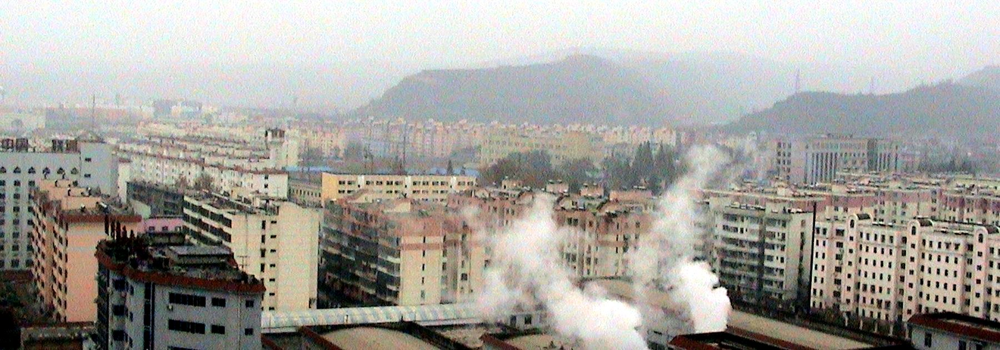

传统节庆
正月里的西府社火是最热闹的。陇县、凤翔一带的社火队走街串巷， 高芯社火把小孩扮成戏文人物架在几米高的铁芯上，锣鼓一响，半条街都挤满了人。

我的家乡是陕西省宝鸡市，地处关中平原西部、渭河中游， 南依秦岭、北枕千山，自古就是陕甘宁川四省通衢之地。 全市总面积约 1.81 万平方公里，常住人口约 326 万。
宝鸡古称陈仓、雍城，是周秦王朝的发祥之地，也是炎帝故里的所在。 《诗经·大雅》里「周虽旧邦，其命维新」的周人，正是从这片渭水之滨走向中原的。 这里素有「青铜器之乡」之称——何尊、毛公鼎等重器皆出土于此， 何尊铭文中「宅兹中国」四字，是「中国」一词最早的文字记录。 城市气质也带着这份厚重的底子：不张扬，但处处有来历。 而对生活在这里的人来说，宝鸡的温度其实很具体—— 是清晨一碗豆花泡馍的热气，也是夏天傍晚渭河边的风。
炎帝故里 青铜器之乡 周秦发祥地
扩展阅读： 百度百科 · 宝鸡 · 维基百科 · 宝鸡市
🎬 想更直观地看看这里，推荐一个视频： Vlog｜中国宝藏城市——陕西宝鸡！

| 名称 | 类型 | 简介 |
|---|---|---|
| 擀面皮 | 主食 | 面皮筋道透亮，浇上油泼辣子、香醋和蒜水，酸辣开胃。夏天蹲在街边吃一碗，比什么都解暑。 |
| 肉夹馍 | 小吃 | 西府的做法用锅盔夹腊汁肉，饼皮厚实酥脆，腊汁肉炖得酥烂、肥而不腻，咬一口直掉渣。 |
| 甑糕 | 甜品 | 糯米与红枣层层相叠，用甑慢蒸数小时，米枣交融、软糯香甜。关中人过年桌上少不了它。 |
| 岐山臊子面 | 汤羹 | 讲究「薄筋光、煎稀汪」：面薄而筋、汤滚烫、油花汪。酸辣鲜香，是宝鸡红白喜事的标配。（但我是扶风人，所以从扶风臊子面说起） |
「明修栈道，暗度陈仓」——陈仓就是宝鸡的古称。 小时候只当它是一句成语，后来才慢慢懂得， 那是我每次回家都要走的那条路。